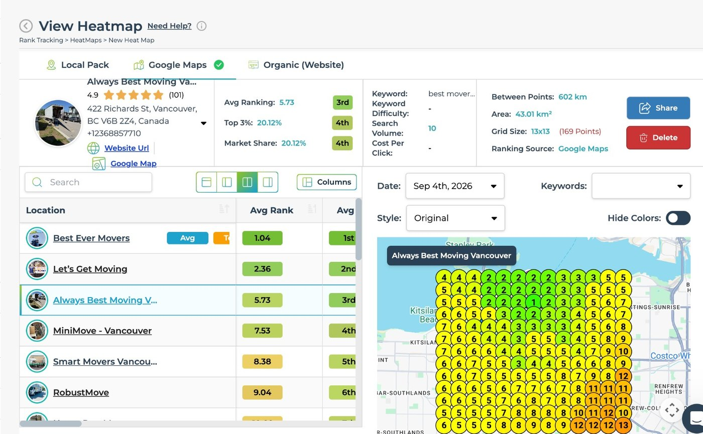

22 clicks a month turned into 100
Always Best Moving is a Vancouver moving company. We run its local search. Here is where the profile stands on the Vancouver map on one dated scan, and what the clicks from organic search did over the summer.
- Services engaged
- Local SEO and Google Business Profile
- Keyword scanned
- best movers vancouver, 13 by 13 grid, 169 points
- Scan date
- 4 September 2026, Google Maps, 43.01 km²
The result
Third in the Vancouver moving market
A heatmap scan drops a grid of search points over the city and reads the ranking at every one of them. Local rank is not one number. It is 169 of them.
This is one dated read of best movers vancouver, run on a 13 by 13 grid, 169 points, off the Google Maps layer on 4 September 2026 over 43.01 km² of Vancouver. Always Best Moving sits 3rd on that board, behind Best Ever Movers at 1.04 and Let’s Get Moving at 2.36. It holds 20.12% of the market and shows in the top 3 on 20.12% of the grid, both of those placing 4th, on an average ranking of 5.73.
One scan, not a before and after. Two scans only compare when the keyword, the business, the ranking source and the ground they cover are the same at both ends, and the area is the first thing worth checking. That is why the area scanned, 43.01 km², sits in the panel below as a row of its own.
422 Richards St, Vancouver, British Columbia
Scanned 4 September 2026
Position in market is the place LeadSnap prints beside Avg Ranking. On this scan market share and top 3 coverage both place 4th.

And the traffic
Clicks from Google, read in Search Console
Search Console on the alwaysbestmoving.ca property, organic search only. Two matched 28 day windows: 18 May to 14 June 2026 against 9 August to 5 September 2026.
100
Clicks from Google
The 28 days to 5 September 2026
22
Clicks from Google
The matched 28 days to 14 June 2026
That 100 and the 22 beside it are the two counts the headline at the top of this page uses. Both are read off the same Search Console property, over the two matched 28 day windows named above. Always Best Moving does not run Google Ads. Every click counted here came from organic search.
The challenge
Vancouver is a crowded map
When somebody needs a truck they open Google, look at the businesses sitting at the top of the map, and call one of them. For a moving company that block is not a nice to have, it is the channel. Everything below it gets a fraction of the attention.
Moving is one of the hardest local categories there is. National brands, franchise operators and lead brokers chase the same searches. They have years of reviews behind them. A lot of them buy the top of the page as well. An independent has to earn the position on relevance, proximity and prominence instead.
Vancouver adds its own problem on top of that. Local rank is not one number. It is measured cell by cell across a grid. A profile that looks fine at its own address can fall away completely fifteen minutes up the road. On a grid that deep, the fastest thing to move is not the headline position at all. It is how many of those cells you show up in, and how many people click when you do.
That is why this page leads with market position and share. A business can pass a long list of competitors on a grid like this and still shift only a few places overall. That is because the ranking is counting everyone in the city at once. Clicks are what the owner feels.
What we did
The same levers, worked every week
The Google Business Profile first. Primary category, secondary categories, service list, service area, hours, description. All of it set the way Google reads it, not the way an owner would write it. Photos go up on a schedule. Posts go out on a schedule. The profile gets worked every week, not filled in once and left alone. The profile is what the map pack ranks.
Then the website. A page for every service the company really sells, and a page for every area it really covers. Area pages get written from real research into the neighbourhood. Never spun from a template with the name swapped out. Near duplicate pages do not rank and do not convert. Schema and a clean title and description go on every one of them.
Then the interlinking. Service pages point at the areas they serve. Area pages point back at the services. The whole set hangs off the locations hub in one silo, not as orphans nobody can reach. Every finished page gets submitted for indexing the day it ships, then checked again after. A page Google has not crawled is worth nothing.
Then the citations. Name, address and phone get matched across the directory set so nothing on the open web contradicts the profile. Inconsistent listings are quiet drag on a local ranking and they are cheap to clear once the profile itself is settled.
And then it repeats. None of this is a one off project. The profile gets posts and photos, the site gets the next batch of pages, the citations get audited again. The numbers at the top of this page are what a few months of that looked like for this client.
 Get started
Get started
Stop being invisible on Google
Send us your business. You get back a free three minute video: where you sit on the local map, and what is holding the position down.
One business per category per service area. No long term contract.